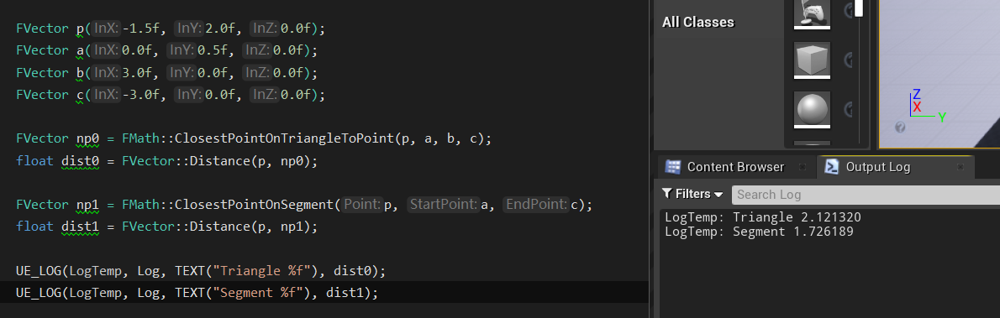
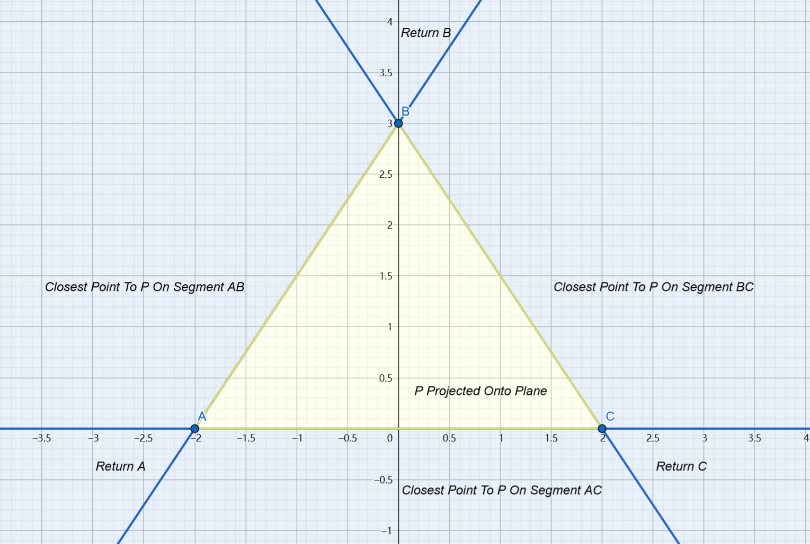
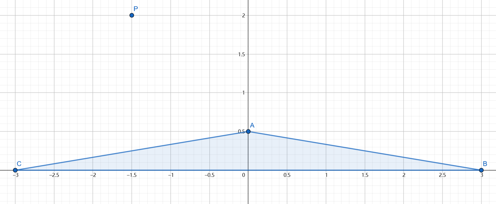
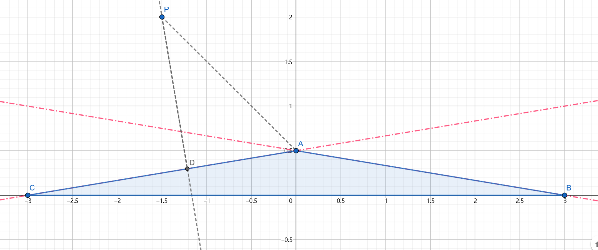
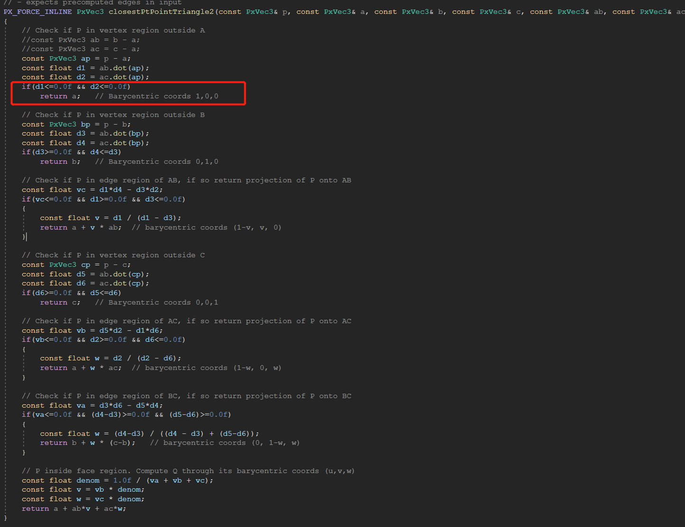
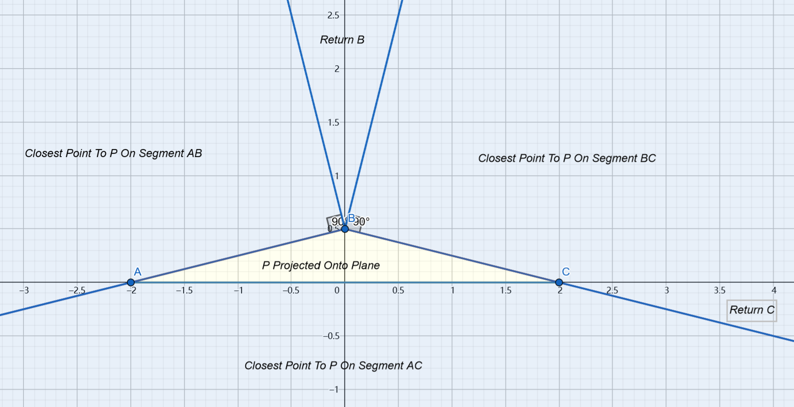
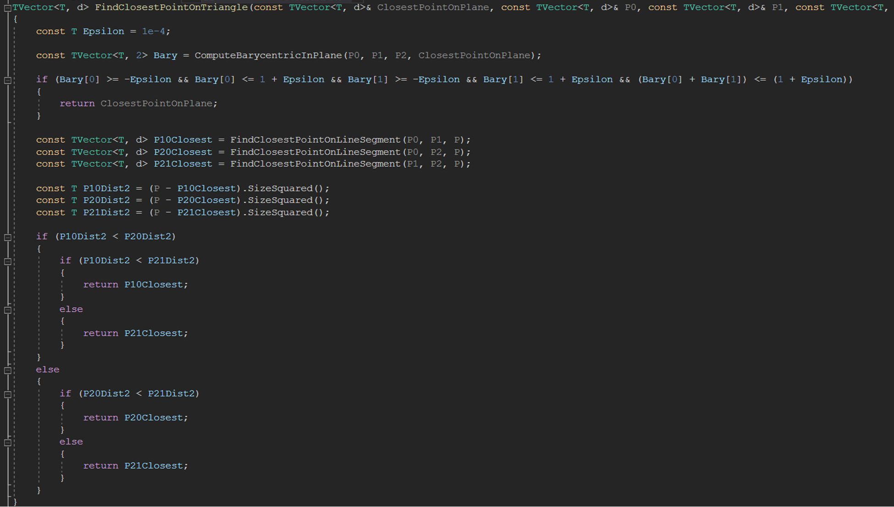

Introduction
UE4 has already provide a function FMath::ClosestPointOnTriangleToPoint for us to calculate the closest point on a triangle to a specific point:
1 | FVector FMath::ClosestPointOnTriangleToPoint(const FVector& Point, const FVector& A, const FVector& B, const FVector& C) |
This function works fine for a right triangle or an acute triangle. But this function can return a wrong result for an obtuse triangle:

The Core Algorithm
How Does This Function Work?
This function simply split the 3-d space into 8 regions. And the closest point is calculated considering which region it is located in:

It’s easy to tell that this can perfectly do the trick for an acute triangle through a little calculation. But this does not work for an obtuse triangle.
What About An Obtuse Triangle?
Imagine a triangle and a point like this:

The function can return point A as the result of the input point P. But actually it is point D that is the true closest point on the triangle like this:

And that is the issue, or rather, the bug of this implementation.
PhysX’s Implementation
PhysX‘s implementation is like this:

Two additional dot production comparisons are performed to fix this issue. So the space partition is like this:

A precise solution is necessary for physx since GJK algorithm needs to find the support point.
Chaos’ Implementation
Chaos has its own implementation as well:

This implementation method is quite simple:
- Firstly, calculate the target point onto the plane
P'; - Second, calculate the barycentric coordinate of
P'. IfP'is located in this triangle, thenP'is the closest point. - Or else, the result point must locate in the edge of this triangle. Thus, calculate the closest point to these 3 line segment, and find the closest one.
The performance implementation is not that good. The implementation of PhysX is preferred considering performance.